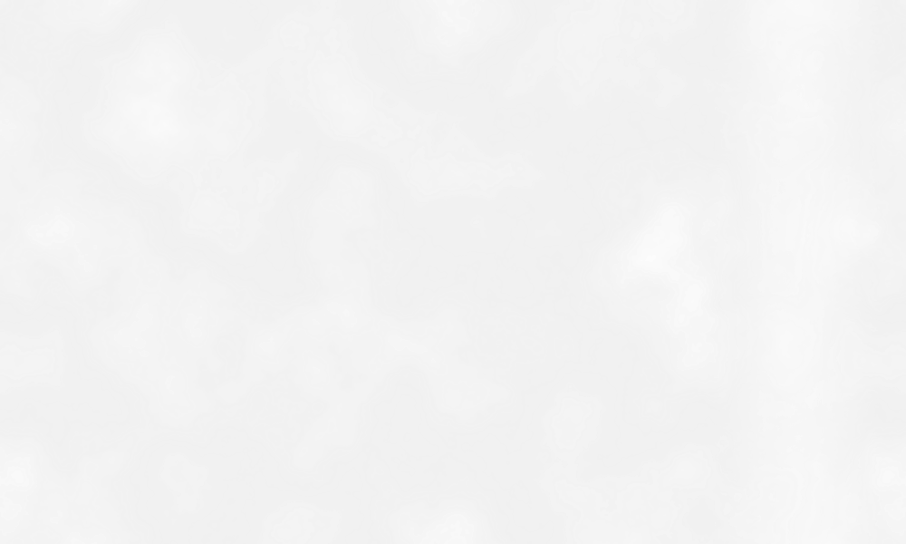
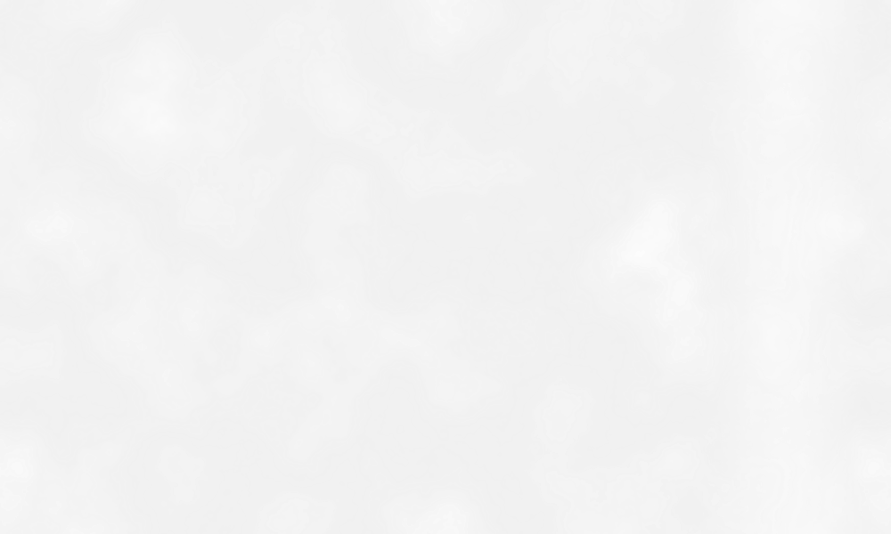

The THREE GRACES
Antonio Canova's sculpture "The Three Graces" is a Neoclassical marble composition depicting the three mythological Charites, daughters of Zeus: Euphrosyne, Aglaea, and Thalia. They embody youth and beauty (Thalia), mirth (Euphrosyne), and elegance (Aglaea). The Graces, who presided over banquets and gatherings, brought joy to the guests of the gods, symbolizing harmony and refinement.
Aglaea
She was venerated as the goddess of beauty, splendor, glory, magnificence, and
adornment. She is the youngest of the
Charites according to Hesiod. Aglaea is one of three daughters of Zeus and either the
Oceanid Eurynome, or of Eunomia,
the goddess of good order and lawful conduct.
Thalia
Thalia, in Greek religion, one of the nine Muses, patron of comedy; also, according to
the Greek poet Hesiod, a Grace
(one of a group of goddesses of fertility). She is the mother of the Corybantes,
celebrants of the Great Mother of the
Gods, Cybele, the father being Apollo, a god related to music and dance. In her hands
she carried the comic mask and the
shepherd’s staff.
Euphre
Euphrosyne is a Goddess of Good Cheer, Joy and Mirth. Her name is the female version of
a Greek word euphrosynos, which
means "merriment". The Greek poet Pindar states that these goddesses were created to
fill the world with pleasant
moments and good will. Usually the Charites attended the goddess of beauty Aphrodite.